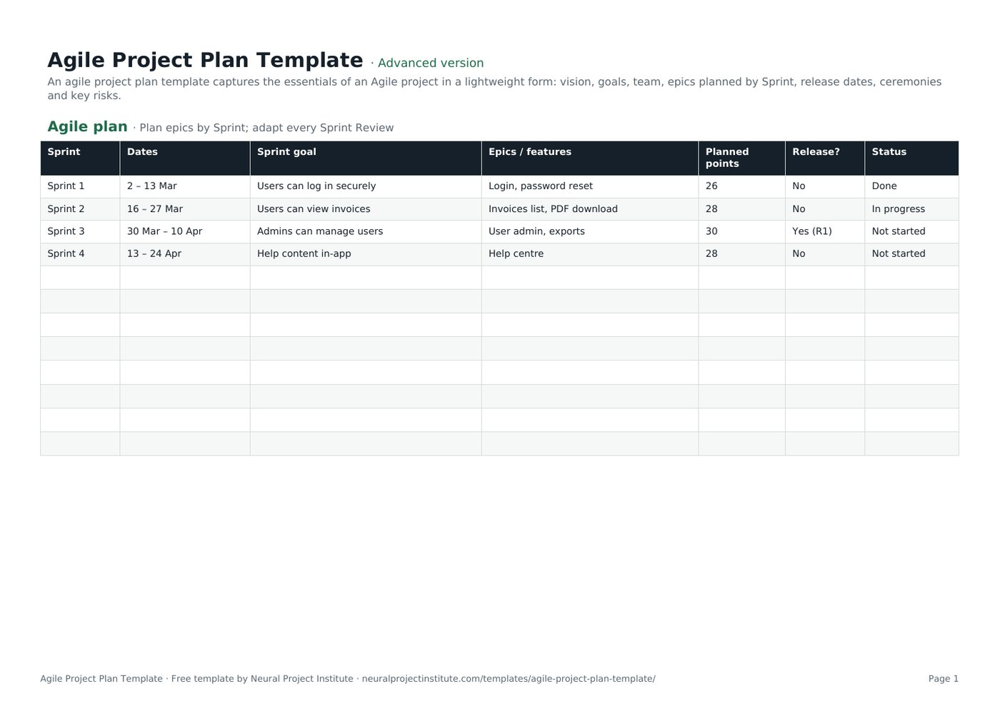

Free Agile Project Plan Template with Charter (Excel, Sheets, PDF)
This free agile project plan template sets out your project Sprint by Sprint, with a goal, the epics or features, planned story points, release points and status for each Sprint, plus a one-page agile project charter for vision, roles and working agreements. Download it in Google Sheets, Excel or PDF at beginner, advanced or expert level, with a worked example and no sign-up.

Key takeaways
- An agile project plan is a lightweight, regularly updated plan that sets direction (vision, goals, Sprints, releases) without fixing every detail up front.
- The template has two tabs: an Agile plan with one row per Sprint, and a Charter for vision, goals, roles, ceremonies, Definition of Done, risks and constraints.
- Plan the next one or two Sprints in detail and later Sprints at epic level only.
- Forecast with your team's actual velocity as a range, not a single promise.
- Update the plan after every Sprint Review so it always reflects what has been delivered and learned.
Free download · no sign-up
Get the agile project plan template
Pick your level and format: Google Sheets, Excel or a print-ready PDF. Spreadsheets include dropdowns, formulas and sample rows you can overwrite.
What is an agile project plan?
An agile project plan is a lightweight plan for a project delivered in short iterations. It sets out the product vision and goals, the team, the planned Sprints with a goal for each, the epics or features expected in them and the target release dates. Unlike a traditional plan, it is revised at the end of every Sprint as the team learns.
Agile teams do plan; they just plan differently. The Agile Manifesto values "responding to change over following a plan", which means the plan exists to guide decisions, not to be defended against change. Planning happens little and often, with detail only where it is useful.
In Scrum, the Product Owner is accountable for the Product Backlog and its priorities, so they usually own the content of the plan. A project manager, delivery lead or Scrum Master often maintains it and shares it with stakeholders.
For the wider picture, see our guide to the role of the project plan in Agile.
Where the plan fits: levels of Agile planning
Agile planning works at several horizons, from long-term direction to the next working day. This template sits in the middle, linking the roadmap to individual Sprints:
| Level | Horizon | What it answers | Where to plan it |
|---|---|---|---|
| Vision | Life of the product | Why are we doing this? | Charter tab |
| Roadmap | Quarters to a year | Which outcomes, in roughly what order? | Product roadmap template |
| Release plan | Weeks to months | What will ship in each release? | Release plan template |
| Agile project plan | The project's Sprints | What is each Sprint for, and when do we release? | This template |
| Sprint plan | One Sprint | What will we do this Sprint, and how? | Sprint planning template |
| Daily plan | One day | What will we do today towards the Sprint Goal? | Daily Scrum |
Small projects can use this template as both release plan and project plan. Larger products with several teams usually keep a separate roadmap and release plan.
What is in this agile project plan template
The template has two tabs with sample data you overwrite with your own. Here is a live preview of the first tab:
| Sprint | Dates | Sprint goal | Epics / features | Planned points | Release? | Status |
|---|---|---|---|---|---|---|
| Sprint 1 | 2 – 13 Mar | Users can log in securely | Login, password reset | 26 | No | Done |
| Sprint 2 | 16 – 27 Mar | Users can view invoices | Invoices list, PDF download | 28 | No | In progress |
| Sprint 3 | 30 Mar – 10 Apr | Admins can manage users | User admin, exports | 30 | Yes (R1) | Not started |
| Sprint 4 | 13 – 24 Apr | Help content in-app | Help centre | 28 | No | Not started |
Sample rows are examples: replace them with your own.
- Agile plan: Sprint, Dates, Sprint goal, Epics / features, Planned points, Release?, Status
- Charter: Item, Details
Agile plan tab
- Sprint: the Sprint name or number.
- Dates: the start and end of the Sprint.
- Sprint goal: the outcome the Sprint is meant to achieve, written from the user's point of view.
- Epics / features: the main pieces of work planned for that Sprint.
- Planned points: the story points the team expects to complete, based on velocity.
- Release?: whether the Sprint ends in a release, and which one (for example, Yes (R1)).
- Status: a dropdown with Not started, In progress, On hold, Blocked and Done.
Charter tab
A lightweight agile project charter with rows for product vision, goals and success measures, Product Owner, Scrum Master, Developers, stakeholders, Sprint length (two weeks in the example), ceremonies, Definition of Done, key risks, and budget or constraints. The ceremonies row shows an example rhythm: Sprint Planning on Monday, the Daily Scrum at 09:30, and the Review and Retrospective on the last Friday.
Beginner, advanced and expert versions
| Version | What you get | Best for |
|---|---|---|
| Beginner | The Agile plan tab with five columns: Sprint, Dates, Sprint goal, Epics / features and Status | Small teams and first Agile projects |
| Advanced | Both tabs: the full seven-column Agile plan with the Status dropdown, and the Charter | Most projects |
| Expert | The advanced template plus an Instructions tab, a Dashboard that counts Sprints by status, status colours (Done green, In progress amber, Blocked red) and a Revision history tab | Projects reporting to a sponsor, steering group or PMO |
The template does not contain formulas. If you want a total of planned points, add a SUM under the Planned points column.
How to create an agile project plan step by step
- Write the charter first. Agree the product vision, two or three measurable goals, the roles, the Sprint length and the ceremony times. Check who fills each role in our guide to Scrum team roles.
- Agree the Definition of Done so everyone knows what "finished" means for every item. See our Definition of Done guide.
- Break the scope into epics and features in your product backlog template, ordered by value.
- Estimate the epics roughly. Story points or T-shirt sizes are enough at this stage; you will refine them before each Sprint.
- Work out your expected velocity. Use the team's recent average, or a cautious guess for a new team, and allow for holidays and other work.
- Lay out the Sprints. Add one row per Sprint with dates, then place epics in Sprints in backlog order until each Sprint's planned points match your velocity. Write a Sprint goal for each.
- Mark release points in the Release? column and agree them with stakeholders.
- Review and re-forecast after every Sprint Review. Update Status, move unfinished work and adjust later Sprints based on actual velocity and feedback.
Spreadsheet tips
- Keep finished Sprints in the plan. They are your record of actual delivery and the basis for the next forecast.
- Filter by Status to show stakeholders only the Sprints in progress and coming next.
- Add a column for actual points if you want to compare planned and completed work Sprint by Sprint.
- Fill in the Charter's key risks, then manage them properly in a risk register template.
Agile project plan example
The template's sample plan is for a customer portal delivered in two-week Sprints:
| Sprint | Sprint goal | Epics / features | Points | Release? | Status |
|---|---|---|---|---|---|
| Sprint 1 (2 to 13 Mar) | Users can log in securely | Login, password reset | 26 | No | Done |
| Sprint 2 (16 to 27 Mar) | Users can view invoices | Invoices list, PDF download | 28 | No | In progress |
| Sprint 3 (30 Mar to 10 Apr) | Admins can manage users | User admin, exports | 30 | Yes (R1) | Not started |
| Sprint 4 (13 to 24 Apr) | Help content in-app | Help centre | 28 | No | Not started |
- Each Sprint goal describes an outcome for users, not a list of tasks. If some features slip, the team can still meet the goal.
- The first release (R1) comes after Sprint 3, once login, invoices and user admin form a usable product.
- Planned points stay close to the team's velocity (around 28), so no Sprint is overloaded.
- Sprint 4 is planned at feature level only; the detail will be worked out in Sprint Planning.
Writing a good Sprint goal
| Weak Sprint goal | Stronger Sprint goal |
|---|---|
| Finish stories 14 to 22 | Customers can download their invoices as PDFs |
| Work on reporting | Managers can see weekly sales by region on one dashboard |
| Bug fixing | Checkout errors fall enough that customers can complete payment without support |
Our Sprint planning guide explains how the team agrees the goal and the work at the start of each Sprint.
Forecasting with velocity
Velocity is the number of story points a team completes in a Sprint. Once you have three to five Sprints of data, use the range rather than the average alone. For example, if a team's recent Sprints delivered 24, 28 and 31 points and 140 points of work remain:
- At the slowest pace (24 points), the work takes about 6 Sprints.
- At the average pace (about 28 points), it takes 5 Sprints.
- At the fastest pace (31 points), it takes about 4.5 Sprints, so 5 in practice.
Tell stakeholders "five to six Sprints" rather than a single date, and narrow the range as you learn. If the date is fixed, flip the question: how much of the backlog fits before the date? Velocity is a planning tool for the team, not a performance target; comparing velocity between teams is meaningless because each team sizes points differently.
Agile vs traditional project plan
| Traditional project plan | Agile project plan | |
|---|---|---|
| What is fixed | Scope, then time and cost are estimated | Time (Sprints) and team, with scope flexible |
| Level of detail | Detailed for the whole project up front | Detailed for the next Sprint or two only |
| Unit of planning | Tasks and work packages | Epics, features and user stories |
| Progress measure | Percentage complete against a baseline | Working increments delivered and Sprint goals met |
| When it changes | Through formal change control | After every Sprint Review |
| Typical format | Gantt chart and schedule | Sprint-by-Sprint plan and backlog |
Neither is better in every situation. Fixed, well-understood work suits a traditional project plan template; uncertain or evolving products benefit from an Agile plan.
Using the plan with Kanban or a hybrid approach
Kanban teams
Kanban has no Sprints, but you can still use this template. Replace each Sprint with a planning period such as a month or quarter, use the Sprint goal column for the period's objective, and replace planned points with expected throughput (items completed per period). Our Kanban planning guide covers the cadences in more detail.
Hybrid projects
Many organisations need fixed milestones for governance, funding or contracts while the delivery team works in Sprints. Add your project milestones to the Release? column or as extra rows, and report progress against them at each Sprint Review. If stakeholders expect a timeline view, an Agile Gantt chart at epic level can sit alongside this plan.
Common agile project plan mistakes
- Planning every Sprint in detail up front. That is a waterfall plan in Agile clothing; detail beyond the next Sprint or two is usually wasted.
- Sprint goals that are task lists. A goal should describe an outcome.
- Overloading Sprints. Plan to your real velocity, not the velocity you hope for.
- Treating the forecast as a commitment. Share ranges and update them every Sprint.
- Skipping the charter. Without an agreed vision and Definition of Done, teams argue about priorities and quality later.
- Letting the plan go stale. If it is not updated after the Sprint Review, stakeholders stop trusting it.
- Measuring output only. Track whether goals and outcomes are met, not just how many points were completed.
Related templates and guides
Write backlog items with the user story template, visualise work on a Kanban board template and improve each Sprint with the sprint retrospective template. For the whole process from kick-off to release, read how to run an Agile project.
 Project Plan TemplateFree project plan template with goals, scope, deliverables, tasks, owners, dates and…Beginner · Advanced · Expert
Project Plan TemplateFree project plan template with goals, scope, deliverables, tasks, owners, dates and…Beginner · Advanced · Expert Sprint Planning TemplateFree sprint planning template with Sprint Goal, capacity, selected backlog items, story…Beginner · Advanced · Expert
Sprint Planning TemplateFree sprint planning template with Sprint Goal, capacity, selected backlog items, story…Beginner · Advanced · Expert Product Roadmap TemplateFree product roadmap template with themes, initiatives, quarters, owners and status; also…Beginner · Advanced · Expert
Product Roadmap TemplateFree product roadmap template with themes, initiatives, quarters, owners and status; also…Beginner · Advanced · Expert Agile Release Plan TemplateFree agile release plan template: releases, Sprints, features, story points, velocity…Beginner · Advanced · Expert
Agile Release Plan TemplateFree agile release plan template: releases, Sprints, features, story points, velocity…Beginner · Advanced · Expert Sprint Retrospective TemplateFree sprint retrospective template: what went well, what to improve, ideas and action…Beginner · Advanced · Expert
Sprint Retrospective TemplateFree sprint retrospective template: what went well, what to improve, ideas and action…Beginner · Advanced · Expert Kanban Board TemplateFree Kanban board template with To Do, In Progress, Review and Done columns, WIP limits…Beginner · Advanced · Expert
Kanban Board TemplateFree Kanban board template with To Do, In Progress, Review and Done columns, WIP limits…Beginner · Advanced · ExpertFrequently asked questions
What is an agile project plan template?
An agile project plan template is a lightweight plan that sets out the vision, goals, team, Sprints, Sprint goals, epics and releases for an Agile project, designed to be updated every Sprint.
Is this agile project plan template free?
Yes. The agile project plan template is free to download in Google Sheets, Excel and PDF, at beginner, advanced and expert level, with no sign-up.
Do Agile projects need a project plan?
Yes. Agile projects still plan, but in short cycles. The plan sets direction and release targets and is revised after every Sprint rather than fixed at the start.
What should an agile project plan include?
Product vision and goals, roles, Sprint length and ceremonies, the Definition of Done, epics or features planned by Sprint, Sprint goals, release points, key risks and constraints.
Does the template include an agile project charter?
Yes. The Charter tab is a lightweight agile project charter covering vision, goals, roles, stakeholders, Sprint length, ceremonies, Definition of Done, risks and constraints.
How is an agile project plan different from a traditional project plan?
A traditional project plan fixes scope up front and plans every task. An agile project plan fixes time and team, keeps scope flexible and plans in detail only for the next Sprint or two.
How do I create an agile project plan?
Write a charter, agree the Definition of Done, break the scope into epics, estimate them roughly, work out expected velocity, place epics in Sprints with a goal for each, mark releases and update the plan after every Sprint Review.
How often should I update the agile project plan?
After every Sprint Review, based on what was delivered, the team's actual velocity and stakeholder feedback.
Who owns the agile project plan?
The Product Owner owns the priorities and content. A project manager, delivery lead or Scrum Master often maintains the document and shares it with stakeholders.
Can I use the agile project plan template with Kanban?
Yes. Replace Sprints with monthly or quarterly periods, use the goal column for each period's objective and track throughput instead of story points.
Can I show an agile project plan as a Gantt chart?
Yes, at epic or release level. A high-level Agile Gantt chart helps stakeholders who expect a timeline, while the team works from the backlog.
What is the difference between an agile project plan and a release plan?
A release plan focuses on what ships in each release. An agile project plan also covers the project's vision, roles, ceremonies and Sprint goals. Small projects often combine both in this template; larger ones use a separate release plan template.
What is the difference between the beginner, advanced and expert agile project plan template?
The beginner version is the Agile plan tab with five essential columns. The advanced version has both tabs, all seven plan columns and the Status dropdown. The expert version adds instructions, a dashboard that counts Sprints by status, status colours and a revision history.